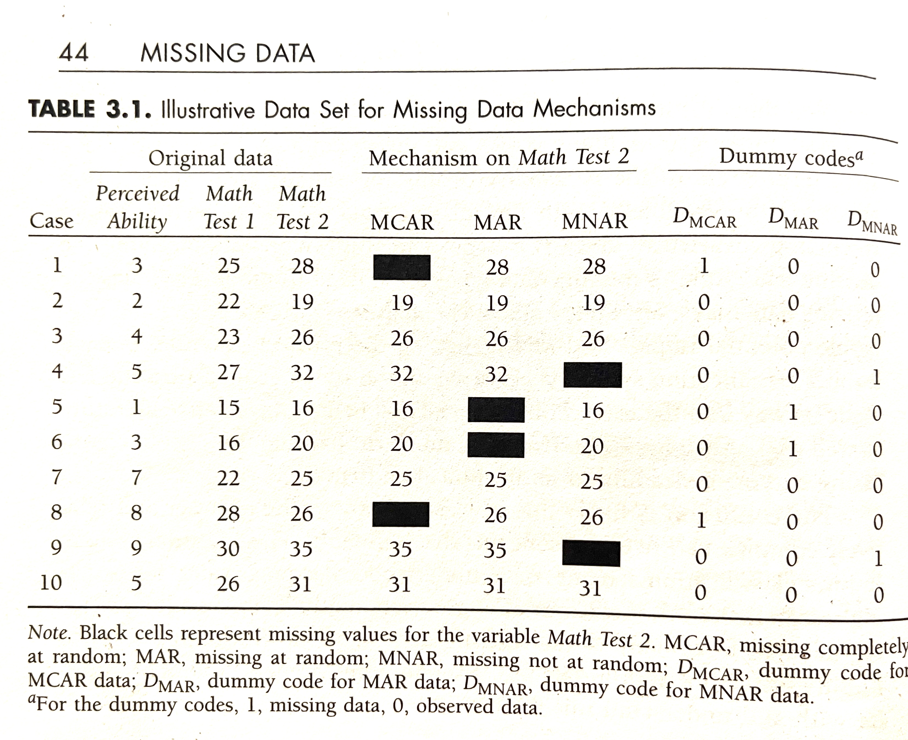
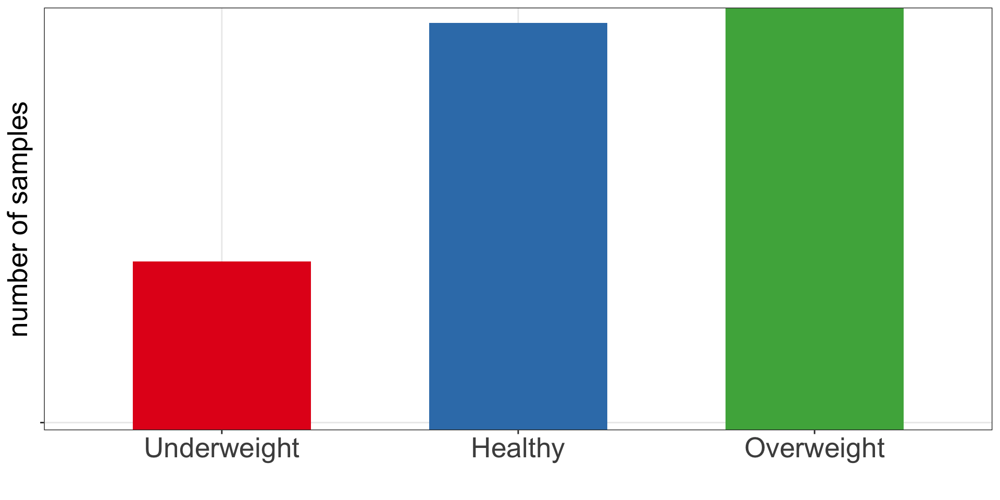

| id | obese | is_healthy | is_overweight |
|---|---|---|---|
| 902 | Overweight | 0 | 1 |
| 911 | Healthy | 1 | 0 |
| 916 | Healthy | 1 | 0 |
| 1171 | Underweight | 0 | 0 |
| 1185 | Healthy | 1 | 0 |
Feature engieering & selection
Introduction
\(p \gg n\)
- Quite often we are not only interested in building the best predictive model but we would also like to know which features are the key ones.
- For instance e.g. which gene measurements allow us to tell healthy and tumor tissues apart.
- Feature selection often goes hand in hand with feature engineering part of the supervised learning.
Let’s discuss:
- feature engineering
- feature selection
- regularized regression
- and learn how to use
tidymodelsframework for supervised learning projects
Feature engieering
Definition
Feature engineering refers to techniques in machine learning that are used to prepare data for modeling and in turn improve the performance of machine learning models.
Feature engieering
scaling & normalization
- Scaling of numerical features
- Changing the range (scale) of the data to prevent features with larger scales dominating the model. By default we used scaling with
kknn()function as it is based on calculating Euclidean distance.
- Changing the range (scale) of the data to prevent features with larger scales dominating the model. By default we used scaling with
- Normalization
- Changing observations so that they can be described by a normal distribution.
- e.g. going from positive skew: mode < median < mean
- or going from negative skew: mode > median > mean
Feature engieering
common transformations
square-root for moderate skew
- sqrt(x) for positively skewed data,
- sqrt(max(x+1) - x) for negatively skewed data
log for greater skew
- log10(x) for positively skewed data,
- log10(max(x+1) - x) for negatively skewed data
inverse for severe skew
- 1/x for positively skewed data
- 1/(max(x+1) - x) for negatively skewed data
Feature engieering
dummy variables
- Representing categorical variables with dummy variables or one-hot encoding to create numerical features.
- For instance a categorical variable
obesewith three possible vales (underweight, healthy, overweight) can be transformed into two binary variables: “is_healthy”, and “is_overweight”, where the value of each variable is 1 if the observation belongs to that category and 0 otherwise. Only \(k-1\) binary variables to encode \(k\) categories.
- For instance a categorical variable
- In one-hot encoding \(k\) binary variables are created.
Feature engieering
missing data
- handling missing data via
- imputations (mean, median, KNN-based)
- deleting strategies such as list-wise deletion (complete-case analysis) or pair-wise deletion (available-case analysis)
- choosing algorithms that can handle some extent of missing data, e.g. Random Forest, Naive Bayes
Feature engieering
Rubin’s (1976) missing data classification system
MCAR
- missing completely at random
MAR
- missing at random
- two observations for Test 2 deleted where Test 1 \(<17\)
- missing data on a variable is related to some other measured variable in the model, but not to the value of the variable with missing values itself
MNAR
- missing not at random
- omitting two higest values for Test 2
- when the missing values on a variable are related to the values of that variable itself
 “Missing Data: A Gentle Introduction by Patrick E. McKnight, Katherine M. McKnight, Souraya Sidani, and Aurelio Jose Figueredo” (2008)]
Feature engieering
handling imbalanced data
- handling imbalanced data
- down-sampling
- up-sampling
- generating synthetic instances
- e.g. with SMOTE (Fernández et al. 2018)
- or ADASYN (He et al. 2008)

Feature engieering
misc
- feature aggregation
- e.g. combining multiple related features into a single one, e.g. calculating average of a group
- feature interaction: creating new features by combining existing features
- e.g. creating
BMIvariables based onweightandheight
- e.g. creating
- dimensionality reduction: reducing number of features in a data set by transforming them into a lower-dimensional space
- filtering out irrelevant features
- e.g. using variance threshold or univariate statistics
- filtering out redundant features
- e.g. keeping only one of a group of highly correlated features
- Note: collinearity reduces the accuracy of the estimates of the regression coefficients and thus the power of the hypothesis testing is reduced.
Feature selection
Feature selection
Group discussion
It is time to try to find the best model to explain BMI using diabetes data. Given from what we have learnt so far about linear regression models, how would you find the best model?
As a reminder, we have below variables in the data:
[1] "id" "chol" "stab.glu" "hdl" "ratio" "glyhb"
[7] "location" "age" "gender" "height" "weight" "frame"
[13] "bp.1s" "bp.1d" "bp.2s" "bp.2d" "waist" "hip"
[19] "time.ppn" "BMI" "obese" Feature selection
Definition
Feature selection is the process of selecting the most relevant and informative subset of features from a larger set of potential features in order to improve the performance and interpretability of a machine learning model.
There are generally three main groups of feature selection methods:
- Filter methods use statistical measures to score the features and select the most relevant ones, e.g. based on correlation coefficient or \(\chi^2\) test. They tend to be computationally efficient but may overlook complex interactions between features and can be sensitive to the choice of metric used to evaluate the feature importance.
- Wrapper methods use a machine learning algorithm to evaluate the performance of different subsets of features, e.g. forward/backward feature selection. They tend to be computationally heavy.
- Embedded methods incorporate feature selection as part of the machine learning algorithm itself, e.g. regularized regression or Random Forest. These methods are computationally efficient and can be more accurate than filter methods.
Regularized regression
definition
- Regularized regression expands on the regression by adding a penalty term(s) to shrink the model coefficients of less important features towards zero.
- This can help to prevent overfitting and improve the accuracy of the predictive model.
- Depending on the penalty added, we talk about Ridge, Lasso or Elastic Nets regression.
Regularized regression
Ridge regression
Previously we saw that the least squares fitting procedure estimates model coefficients \(\beta_0, \beta_1, \cdots, \beta_p\) using the values that minimize the residual sum of squares: \[RSS = \sum_{i=1}^{n} \left( y_i - \beta_0 - \sum_{j=1}^{p}\beta_jx_{ij} \right)^2 \qquad(1)\]
In regularized regression the coefficients are estimated by minimizing slightly different quantity. Specifically, in Ridge regression we estimate \(\hat\beta^{L}\) that minimizes \[\sum_{i=1}^{n} \left( y_i - \beta_0 - \sum_{j=1}^{p}\beta_jx_{ij} \right)^2 + \lambda \sum_{j=1}^{p}\beta_j^2 = RSS + \lambda \sum_{j=1}^{p}\beta_j^2 \qquad(2)\]
where:
\(\lambda \ge 0\) is a tuning parameter to be determined separately e.g. via cross-validation
Regularized regression
Ridge regression
\[\sum_{i=1}^{n} \left( y_i - \beta_0 - \sum_{j=1}^{p}\beta_jx_{ij} \right)^2 + \lambda \sum_{j=1}^{p}\beta_j^2 = RSS + \lambda \sum_{j=1}^{p}\beta_j^2 \qquad(3)\]
Equation 3 trades two different criteria:
- as with least squares, lasso regression seeks coefficient estimates that fit the data well, by making RSS small
- however, the second term \(\lambda \sum_{j=1}^{p}\beta_j^2\), called shrinkage penalty is small when \(\beta_1, \cdots, \beta_p\) are close to zero, so it has the effect of shrinking the estimates of \(\beta_j\) towards zero.
- the tuning parameter \(\lambda\) controls the relative impact of these two terms on the regression coefficient estimates
- when \(\lambda = 0\), the penalty term has no effect
- as \(\lambda \rightarrow \infty\) the impact of the shrinkage penalty grows and the ridge regression coefficient estimates approach zero
Regularized regression
Ridge regression
Example of Ridge regression to model BMI using age, chol, hdl and glucose variables: model coefficients are plotted over a range of lambda values, showing how initially for small lambda values all variables are part of the model and how they gradually shrink towards zero for larger lambda values.
Bias-variance trade-off
Ridge regression’s advantages over least squares estimates stems from bias-variance trade-off
- The bias-variance trade-off describes the relationship between model complexity, prediction accuracy, and the ability of the model to generalize to new data.
- Bias refers to the error that is introduced by approximating a real-life problem with a simplified model
- e.g. a high bias model is one that makes overly simplistic assumptions about the underlying data, resulting in under-fitting and poor accuracy.
- Variance refers to the sensitivity of a model to fluctuations in the training data.
- e.g. a high variance model is one that is overly complex and captures noise in the training data, resulting in overfitting and poor generalization to new data.
Bias-variance trade-off
The goal of machine learning is to find a model with the right balance between bias and variance.
- The bias-variance trade-off can be visualized in terms of MSE, means squared error of the model. The MSE can be decomposed into: \[MSE(\hat\beta) := bias^2(\hat\beta) + Var(\hat\beta) + noise\]
- The irreducible error is the inherent noise in the data that cannot be reduced by any model
- The bias and variance terms can be reduced by choosing an appropriate model complexity.
- The trade-off lies in finding the right balance between bias and variance that minimizes the total MSE.
- In practice, this trade-off can be addressed by regularizing the model, selecting an appropriate model complexity, or by using ensemble methods that combine multiple models to reduce the variance.
Bias-variance trade-off

Figure 1: Squared bias, variance and test mean squared error for ridge regression predictions on a simulated data as a function of lambda demonstrating bias-variance trade-off. Based on Gareth James et. al, A Introduction to statistical learning
Ridge vs. Lasso
In Ridge regression we minimize: \[\sum_{i=1}^{n} \left( y_i - \beta_0 - \sum_{j=1}^{p}\beta_jx_{ij} \right)^2 + \lambda \sum_{j=1}^{p}\beta_j^2 = RSS + \lambda \sum_{j=1}^{p}\beta_j^2 \qquad(4)\] where \(\lambda \sum_{j=1}^{p}\beta_j^2\) is also known as L2 regularization element or \(l_2\) penalty
In Lasso regression, that is Least Absolute Shrinkage and Selection Operator regression we change penalty term to absolute value of the regression coefficients: \[\sum_{i=1}^{n} \left( y_i - \beta_0 - \sum_{j=1}^{p}\beta_jx_{ij} \right)^2 + \lambda \sum_{j=1}^{p}|\beta_j| = RSS + \lambda \sum_{j=1}^{p}|\beta_j| \qquad(5)\] where \(\lambda \sum_{j=1}^{p}|\beta_j|\) is also known as L1 regularization element or \(l_1\) penalty
Lasso regression was introduced to help model interpretation. With Ridge regression we improve model performance but unless \(\lambda = \infty\) all beta coefficients are non-zero, hence all variables remain in the model. By using \(l_1\) penalty we can force some of the coefficients estimates to be exactly equal to 0, hence perform variable selection
Ridge vs. Lasso
Elastic Net
Elastic Net use both L1 and L2 penalties to try to find middle grounds by performing parameter shrinkage and variable selection. \[\sum_{i=1}^{n} \left( y_i - \beta_0 - \sum_{j=1}^{p}\beta_jx_{ij} \right)^2 + \lambda \sum_{j=1}^{p}|\beta_j| + \lambda \sum_{j=1}^{p}\beta_j^2 = RSS + \lambda \sum_{j=1}^{p}|\beta_j| + \lambda \sum_{j=1}^{p}\beta_j^2 \qquad(6)\]
Example of Elastic Net regression to model BMI using age, chol, hdl and glucose variables: model coefficients are plotted over a range of lambda values and alpha value 0.1, showing the changes of model coefficients as a function of lambda being somewhere between those for Ridge and Lasso regression.
Elastic Net
In R with glmnet
In the glmnet library we can fit Elastic Net by setting parameters \(\alpha\). Under the hood glmnet minimizes a cost function: \[\sum_{i_=1}^{n}(y_i-\hat y_i)^2 + \lambda \left ( (1-\alpha) \sum_{j=1}^{p}\beta_j^2 + \alpha \sum_{j=1}^{p}|\beta_j|\right )\] where:
- \(n\) is the number of samples
- \(p\) is the number of parameters
- \(\lambda\), \(\alpha\) hyperparameters control the shrinkage
When \(\alpha = 0\) this corresponds to Ridge regression and when \(\alpha=1\) this corresponds to Lasso regression. A value of \(0 < \alpha < 1\) gives us Elastic Net regularization, combining both L1 and L2 regularization terms.
Tidymodels
- We have seen that there are many common steps when using supervised learning for prediction, such as data splitting and parameters tuning.
- Over the years, some initiatives were taken to create a common framework for the machine learning tasks in R.
- A while back Max Kuhn was the main developer behind a popular
caretpackage that among others enabled feature engineering and control of training parameters like cross-validation. - In 2020
tidymodelsframework was introduced as a collection of R packages for modeling and machine learning using tidyverse principles, under a guidance of Max Kuhn and Hadley Wickham, author oftidyversepackage.
Live demo
Let’s find the best model with Lasso regression to predict BMI and see which features in our data set contribute most to the BMI score.
References
Fernández, Alberto, Salvador Garcia, Francisco Herrera, and Nitesh V Chawla. 2018. “SMOTE for Learning from Imbalanced Data: Progress and Challenges, Marking the 15-Year Anniversary.” Journal of Artificial Intelligence Research 61: 863–905.
He, Haibo, Yang Bai, Edwardo A. Garcia, and Shutao Li. 2008. “ADASYN: Adaptive Synthetic Sampling Approach for Imbalanced Learning.” In 2008 IEEE International Joint Conference on Neural Networks (IEEE World Congress on Computational Intelligence), 1322–28. https://doi.org/10.1109/IJCNN.2008.4633969.
“Missing Data: A Gentle Introduction by Patrick E. McKnight, Katherine M. McKnight, Souraya Sidani, and Aurelio Jose Figueredo.” 2008. Personnel Psychology 61 (1): 218–21. https://doi.org/10.1111/j.1744-6570.2008.00111_8.x.